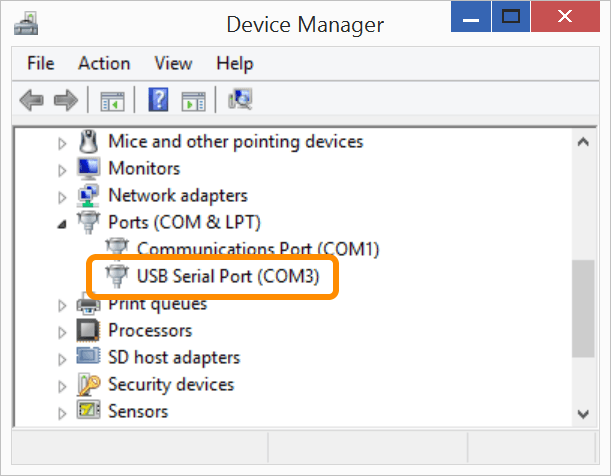

-
Connect a micro-USB cable to the UART/serial micro-USB port of the Intel® Edison expansion board, and the other end to your computer.

Refer to UART/serial micro-USB cable for more detailed cable connection information.
-
Open Device Manager.
Don’t know how? Refer to Confirm Drivers → Open Device Manager.
-
Scroll down to the “Ports (COM & LPT)” section.
-
Make a note of your COM # for the “USB Serial Port” device.
Do not use the COM number for “Intel Edison USB Composite Device” or “Intel Edison Virtual Com Port”. Those are for other features.

Use the COM # shown on your computer’s Device Manager. In the screenshot, it is “COM3” but your computer will have unique COM port number assignments and may be different from the screenshot.
Don’t see a “USB Serial Port” device listed?
- Do you have the serial drivers installed?
- A serial connection cannot be detected without FTDI serial drivers. Refer to Set Up Your Computer - Windows (manual installation).
-
Do you have the UART/serial cable connected? Refer to UART/serial micro-USB cable.
- Is your IoT board powered on?